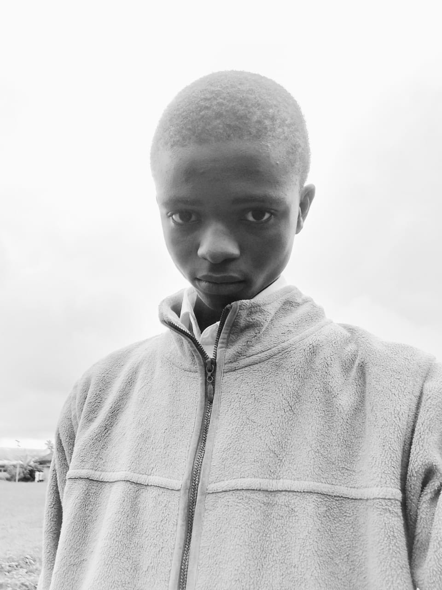

My dream is to become a world-class software engineer and STEM innovator who creates technology that solves real problems in education, energy, healthcare, and society.

Future Software Engineer • STEM Innovator • Web Developer
"Turning Ideas into Technology that Changes Lives."
Hello! I'm Abasi-isinke Mbat, an SS2 Science student from Saint Francis Secondary School, Eket, Akwa Ibom State, Nigeria. I am passionate about software engineering, web development, STEM innovation, and solving real-world problems through technology. This portfolio showcases my learning journey and my flagship STEM project, EcoGrid Pavement.
I am passionate about Software Engineering, Web Development, Artificial Intelligence, and STEM innovation. My goal is to study Software Engineering either in Nigeria or abroad and build technology that solves real-world problems.
💻 HTML
🎨 CSS
🖌️ CorelDRAW
📄 Microsoft Word
📊 Microsoft Excel
🔬 STEM Innovation
EcoGrid Pavement is a modular bamboo kinetic energy walkway that converts footsteps into electricity to power school security lights while promoting clean and sustainable energy.
View ProjectEmail: mbatabasiisinke@gmail.com
Location: Eket, Akwa Ibom State, Nigeria
"Success is not about where you start, but about how determined you are to keep learning."⬆